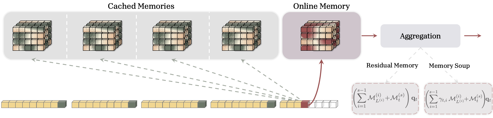
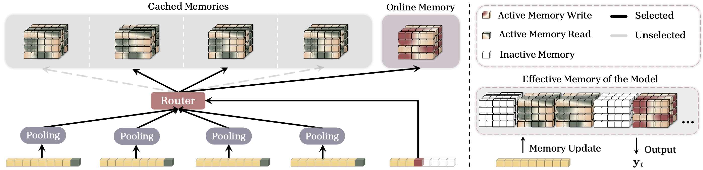
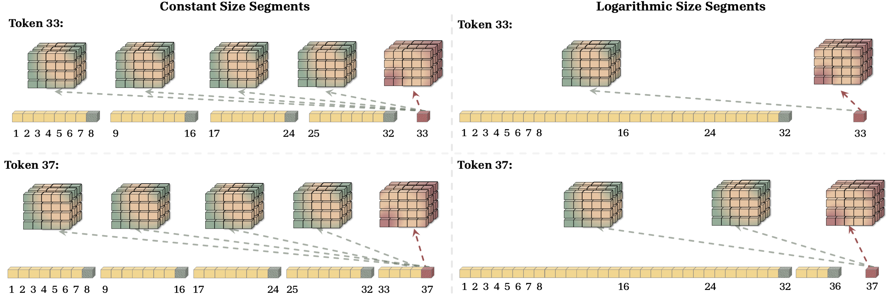
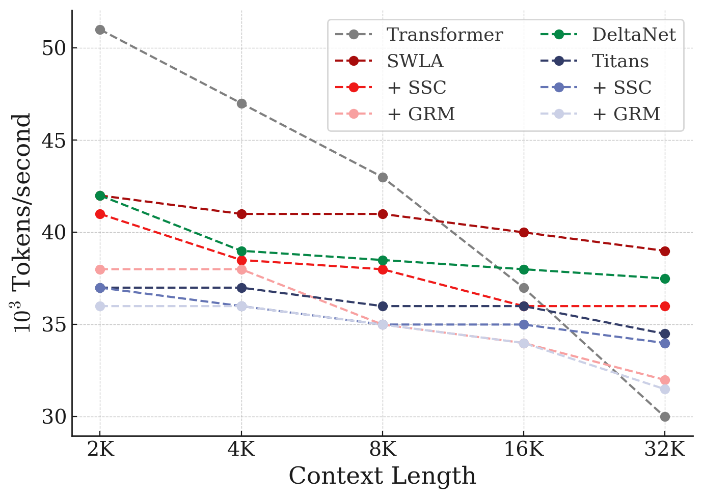

Transformer已成为序列建模的主流骨干，主要归功于其随上下文长度扩展的增长记忆容量。这对检索任务而言合理，但也导致二次复杂度，因而推动了次二次（subquadratic）循环替代方案的探索。这类循环架构虽在多个领域展现初步成效，但在依赖回忆的任务上往往不如Transformer，常归因于其固定大小的记忆。 本文提出Memory Caching（MC），一种简单却有效的技术：通过缓存记忆状态（hidden state）的检查点来增强循环模型。MC让RNN的有效记忆容量随序列长度增长，在RNN的固定记忆（O(L) 复杂度）与Transformer的增长记忆（O(L²) 复杂度）之间提供灵活权衡。 论文提出MC的四个变体，包括门控聚合与稀疏选择性机制，并讨论它们在线性和深度记忆模块上的含义。
Transformer能学习大规模、能进行上下文学习，其根源是其核心构件：注意力模块，它充当一种具有增长容量的联想记忆。这种增长记忆对检索任务非常有效，但也带来了二次复杂度问题。
为规避这一开销，近期研究探索各种次二次的循环替代方案（RNN、Mamba等），并在多领域取得初步成果。但这些循环架构在依赖回忆的任务上往往逊于Transformer，业界普遍将差距归因于其固定大小的记忆：循环模型的历史信息被压缩进一个恒定尺寸的隐状态，无法随上下文增长。
正因为记忆容量被锁死，循环模型难以胜任长上下文中的精确检索。Memory Caching（MC）正是针对这一结构性短板：它不是改动记忆本身，而是通过缓存记忆状态的检查点，把「过去的记忆」从固定大小中解放出来。

MC的核心操作：把输入序列切分为若干连续段（segment）。每个token在计算输出时，既使用自己所在段的「在线记忆」状态，也使用之前各段结束时留下的缓存记忆检查点。
形式上，给定各段的键、值、查询，以及段S(1)…S(N)，MC将记忆更新与输出计算解耦：在线记忆随token在当前段内持续更新，而缓存记忆则是过去每个段结束时对应的记忆状态快照。关键变化在于输出的计算方式：检索记忆时，模型用前向（forward）查询过去的缓存记忆，而非仅依赖当前压缩状态。
复杂度因此可控：token只需关注在线记忆（成本低）加一组缓存的过去记忆。通过调节缓存段的粒度（多少段被缓存、缓存到什么细节），MC在RNN的O(L) 与Transformer的O(L²) 之间连续插值，让用户按任务对记忆的需求灵活取舍。
论文将「如何聚合缓存记忆」抽象为Agg操作符，并据此提出四个变体，覆盖从简单求和到学习式门控再到稀疏选择的不同实现。
Residual Memory（残差记忆） 是最简单的Agg操作符：对跨记忆状态取和，充当残差连接。此时每个token的在线记忆仍是递归更新，但输出额外叠加了所有过去缓存记忆的输出。它验证了最朴素的缓存聚合也能带来收益。
Memory Soup（记忆浓汤） 进一步探索不同的聚合方式，将多个缓存记忆按可学习方式组合，让模型自行决定更依赖哪段历史。
Sparse Selective Caching（SSC，稀疏选择性缓存） 是更聪明的变体：一个router先测量当前token与过去各段之间的上下文相似度，再有选择地选出子集缓存记忆去查询，而非对全部历史一视同仁。这样既保留长程检索能力，又避免对所有过去段都做完整查询的开销。

Caching Checkpoints or Independent Compressors则是设计层面的讨论：是缓存记忆检查点、还是用独立的压缩器单独维护历史信息，论文分析了两种路线的权衡。
MC的有效容量和复杂度取决于分段策略。log对数大小的分段虽计算上更有吸引力，却会导致某些记忆覆盖范围不足或过度：论文用常数大小与对数大小两种分段作对比例证（Figure 3）。
分段越细、缓存的记忆时间点越密，有效记忆容量越大，但查询与存储开销也越高；分段越粗则反之。这是MC里又一个可调的「容量：复杂度」权衡，与缓存粒度共同决定模型在长上下文任务上的表现。

这种分段思想同样适用于更广泛的记忆模块：论文讨论了对线性（linear）记忆模块和深度（deep）记忆模块分别意味着什么，以及如何把MC套用到Titans和线性注意力变体上：即不局限于某一种循环架构。
论文在语言建模、常识推理、长上下文理解等多类任务上评估MC。结果显示MC增强了循环模型的性能，相比各自的基座RNN都有提升，且提升源于记忆容量的增长而非参数量的增加。
在上下文内检索（in-context recall）任务上，尽管Transformer仍取得最高准确率，MC变体表现出与Transformer竞争的水平，明显缩小了差距，并且优于现有最先进的循环模型。这直接回应了「固定记忆导致检索弱」的痛点。
在Needle-In-A-Haystack、长上下文理解（NarrativeQA、QasperQA等）、多查询联想回忆（MQAR）等基准上，MC一致地带来增益；消融研究表明MC的各项设计选择都对有效性有正向贡献。训练吞吐上，MC保持了循环模型的计算效率（Figure 4）。

结论：记忆缓存是一种简单、通用、几乎即插即用的增强技术，它让循环模型在保持次二次复杂度的同时获得可增长的记忆容量，在「记忆vs. 算力」的传统取舍中找到了新的平衡点，为缩小循环模型与Transformer在长程检索上的差距提供了务实路径。
参考：https://arxiv.org/html/2602.24281v1